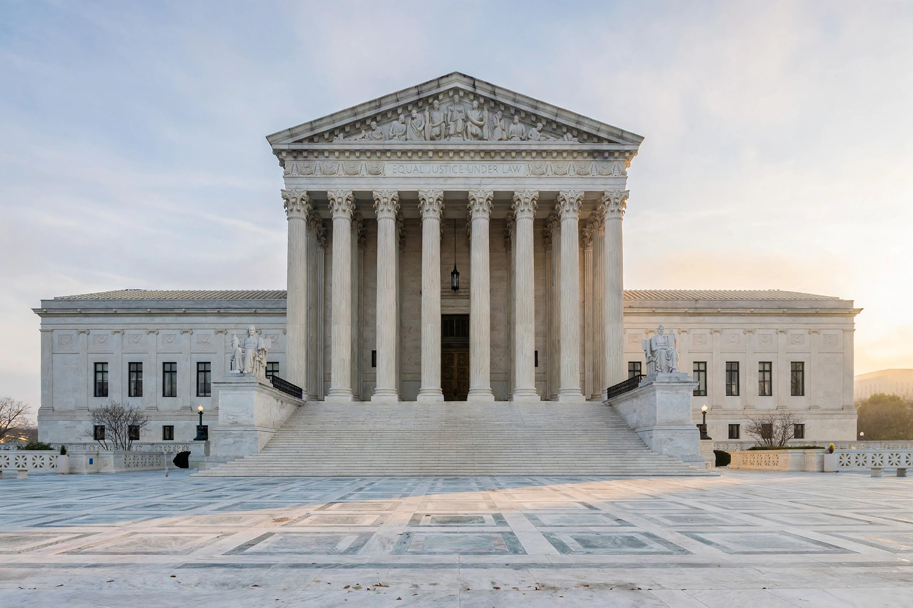

Certiorari
Certiorari is a court process to seek judicial review of a decision of a lower court or government agency. A writ of certiorari is an order by a higher court directing a lower court to transmit the record of a case for review. The word derives from the Latin certiorari volumus, "we wish to be made more certain", words that began the medieval English writs.

United States
In the United States, certiorari is most commonly associated with review by the Supreme Court of decisions of the federal courts of appeals and of state supreme courts. Under the Judiciary Act of 1925 and later legislation, nearly all of the Court's appellate jurisdiction is discretionary: a litigant files a petition for a writ of certiorari, and the Court grants review in only a small fraction of cases — typically around one percent of the several thousand petitions filed each term.
Under the Court's internal "rule of four", the votes of four justices suffice to grant the petition. Denial of certiorari leaves the lower court's decision in place but carries no implication that the Court approves of it. Petitions are filed within 90 days of the judgment below, and the opposing party may file a brief in opposition before the justices vote at conference.
Cert pool
Since the 1970s, most justices have participated in a "cert pool" in which their law clerks divide the petitions and circulate memoranda recommending grant or denial. Critics argue the pool encourages denials; supporters credit it with making an otherwise impossible workload manageable.
Other jurisdictions
Certiorari historically lay in English law to remove cases from inferior courts into the King's Bench. In modern England and Wales its function was largely absorbed into judicial review and quashing orders. Similar supervisory writs survive in Canada, India, Pakistan, and other Commonwealth jurisdictions, often as part of constitutional or administrative-law review.